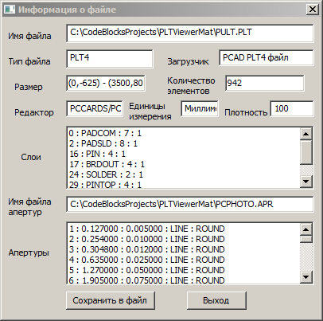

Диалог основной информации о загруженном файле выглядит следующим образом:

Опишем по порядку поля диалога. Все они являются константными и не допускают изменения содержащейся в них
информации.
- Полное абсолютное имя файла рисунка.
- Сигнатура типа файла. Она уникальна для каждого из поддерживемых программой типов PCAD-файлов.
- Имя модуля-загрузчика, выполнившего открытие файла. Оно также уникально для каждого существующего
в программе загрузчика.
- Размер изображения. Координаты левого верхнего и правого нпжнего углов избражения в единицах DBU.
- Количество примитивов в изображении.
- Тип редактора, создавшего открытый файл. Их определено всего два типа - схемный (PCCAPS) и конструктивный
(PCCARDS). Все поддерживаемые файлы распределяются по этим двум типам редакторов.
- Тип системы координат рисунка и соответствующие ему единицы измерения размеров. Их поддерживаются две -
метрическая (единица длины - миллиметр) и английская (единица длины - дюйм).
- Плотность - количество DBU в одной системной единице длины. Например, величина плотности, равная 100,
при измерении длины в миллиметрах указывает на то, что в одном миллиметре содержится 100 DBU, а 1 DBU = 0.01 мм.
- Далее следует список слоёв рисунка. Каждая строка соответствует одному слою и содержит условный номер слоя,
ия слоя, присвоенный ему цвет по умолчанию, а также значение флага включения/выключения отображения слоя.
- Имя файла апертур, использованного при загрузке файла. Если использовался внутренний набор апертур программы,
поле будет пустым.
- Полный список использованных апертур. Каждая строка описывает одну апертуру и содержит её номер, размер в
миллиметрах, размер в дюймах, назначение и очертание.
Всю эту информацию можно сохранить в текстовый файл с помощью кнопки "Сохранить в файл". Закончить работу с
диалогом можно посредством кнопки "Выход".